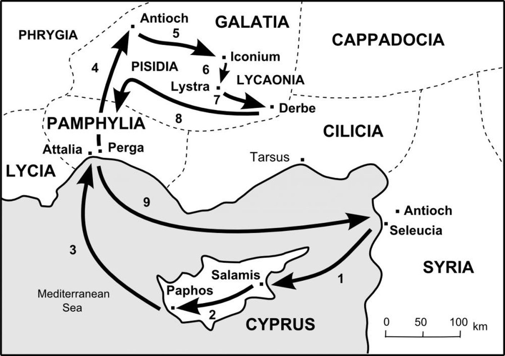
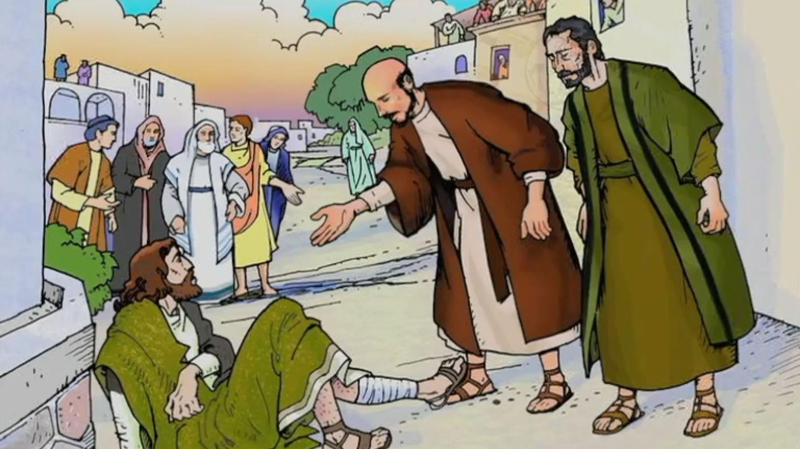
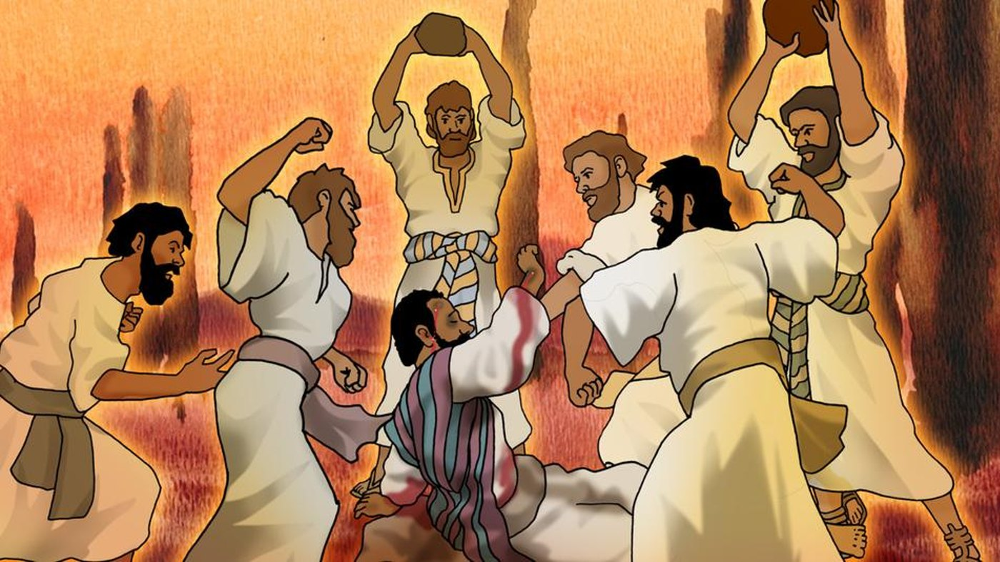

너희가 이 헛된 일을 버리고 … 살아 계신 하나님께로 돌아오게 하려고 복음을 전하노라. 사도행전 14:15
이번 모임은 사도행전 14장을 살펴보며, 바울과 바나바의 첫 번째 선교 여행이 지나간 이고니온, 루스드라, 더베를 따라갔다. 토론은 반복되는 하나의 패턴을 부각했다: 복음이 전파되면 일부는 믿고, 다른 이들은 격렬히 반대한다는 것이다. 주요 주제는 기적의 목적(메시지를 확증하기 위한 것이지 전하는 사람을 영화롭게 하기 위한 것이 아니다), 믿는 자들 사이에도 있는 우상숭배의 위험, 그리고 청중에 따라 전도를 상황화해야 할 필요성이었다. 모임은 유대교와 기독교 신앙의 관계, 그리고 메시아의 본질에 대한 문답으로 마무리되었다.
지도로 위치 잡기
첫 번째 선교 여행 지도는 지리적 진행을 보여 주는 시각 자료로 사용되었다: 안디옥(시리아) → 구브로 → 비시디아 안디옥 → 이고니온 → 루스드라 → 더베, 그리고 다시 안디옥으로.

이고니온에서의 사역 (사도행전 14:1–6)
바울과 바나바는 유대인 회당에서 전도했고, 많은 유대인과 헬라인이 믿었다. 믿지 않는 유대인들은 이방인들을 선동해 그들을 대적하게 하여 반대가 더 심해졌다. 그럼에도 사도들은 오랫동안 그곳에 머물며 담대히 전했고, 하나님은 표적과 기사로 그들의 메시지를 확증하셨다. 성은 두 편으로 갈렸다 — 사도들 편에 선 사람들과 유대인 대적자들 편에 선 사람들이다. 그들을 돌로 치려는 음모가 드러나자 그들은 루스드라와 더베로 피했다.
루스드라의 치유와 무리의 반응 (사도행전 14:7–13)
바울은 나면서부터 걷지 못하던 사람을 고쳤다. 무리의 반응은 바나바를 "제우스", 바울을 "헤르메스"라 부르는 것이었다 — 바울이 주된 말씀 전하는 사람이었기 때문이다. 제우스 신전의 제사장은 소와 화환을 성문 앞으로 가져와 그들에게 제사를 드리려 했다. (개역개정은 제우스를 "쓰스", 헤르메스를 "허메"로 표기한다.)

경배를 거부한 바울과 바나바; 돌에 맞은 바울 (사도행전 14:14–20)
바울과 바나바는 옷을 찢고 무리 속으로 뛰어들어, 경배를 단호히 거부하며 사람들의 주의를 살아 계신 하나님께로 돌렸다. 바울은 하나님의 일반 은총 — 비, 계절, 양식 — 을 유일하신 참 창조주의 증거로 전했다. 그때 안디옥과 이고니온에서 온 유대인들이 무리를 선동했고, 바울은 돌에 맞아 성 밖으로 끌려 나갔으며 죽은 줄로 여겨졌다. 그는 일어나 다시 성으로 들어갔고, 이튿날 바나바와 함께 더베로 떠났다.

반복되는 선교의 패턴
바울의 여정 전체에는 일관된 순환이 흐른다: 전파 → 일부가 믿음 → 반대가 일어남 → 핍박 → 다음 도시로 이동. 같은 메시지가 두 가지 다른 반응 — 믿음과 거부 — 을 낳으며, 이런 양분은 예외가 아니라 예상되는 일이다. 이는 예수님이 열두 제자에게 하신 가르침을 반영한다: 한 도시에서 핍박받으면 다른 도시로 가라; 우선순위는 복음 전파이지 대립이나 논쟁이 아니다. 제자들이 도시에서 도시로 옮겨 다닌 것은 두려움 때문이 아니라 전략적 집중 때문이었다 — 아직 복음을 듣지 못한 사람들에게 복음을 가져가는 것이다.
기적: 확증이지 유명세가 아니다
하나님은 특히 복음이 확장되던 초기에 표적과 기사로 사도들의 메시지를 확증하셨다. 루스드라에서 걷지 못하던 사람을 고친 것은 베드로가 미문에서 행한 치유와 분명히 평행을 이룬다 — 두 사람 모두 나면서부터 걷지 못했다. 기적은 주 예수 그리스도에 대한 메시지를 입증하기 위한 것이지, 전하는 사람의 지위를 높이기 위한 것이 아니다. 바울과 바나바는 올바른 반응을 보여 주었다: 무리가 그들을 경배하려 하자 강하게 거부하며 옷을 찢었다 — 이는 신성모독 앞에서 유대인이 두려움을 표현하는 방식이다.
중요한 경고가 이어졌다: 기적만으로는 사람들을 참 하나님께로 이끌지 못한다. 루스드라의 무리는 기존의 이방 종교 틀로 그 치유를 해석했고, 전혀 엉뚱한 대상을 경배했다.
우상숭배와 하나님을 오해하는 위험
사람들은 이미 가지고 있는 전제를 통해 비범한 사건을 해석한다; 루스드라의 무리는 그리스·로마의 다신교적 세계관으로 돌아갔다. 이는 이방인에게만 있는 일이 아니다 — 이스라엘 백성은 모세가 시내산에 있는 동안 금송아지를 만들고, 애굽에서의 구원을 우상의 공으로 돌렸다. 그리스도인도 똑같이 취약하다: 성경에 꾸준히 몰입하지 않으면 하나님에 대한 마음속 이미지가 왜곡되거나 다른 신앙 체계와 혼합될 수 있다. 모임에서는 점성술, 불교, 기독교가 뒤섞여 믿음이 혼란스러워진 경우를 언급하며, 성경적이지 않은 하나님 이미지가 가져오는 실제 위험을 짚었다.
지도력과 영광을 하나님께 돌리기
바울과 바나바는 그리스도인 지도자의 본을 보였다: 사역이 열매를 맺을 때, 모든 관심과 경배를 자신이 아니라 하나님께로 돌리는 것이다. 영적 지도자들은 "하나님의 영광을 가로채려는" 특별한 유혹에 직면한다 — 설교에 대한 칭찬을 즐기든, 반응이 없을 때 낙심하든 마찬가지다. 올바른 자세는 선포의 의무를 신실하게 감당하는 것이며, 사람들의 마음속에서 변화를 일으키는 일은 하나님께 속한다. 누군가 지도자를 높이거나 경배하기 시작하면, 즉시 단호하게 바로잡아야 한다.
복음의 상황화
바울의 전도 방식은 청중에 따라 크게 달랐다:
- 유대인에게: 성경적 기초를 공유했기에 구약 역사, 조상들, 다윗, 메시아 예언에서 논증했다.
- 이방 이교도에게: (그들에게는 낯선) 성경을 사용하지 않고, 일반 은총 — 비, 수확, 양식, 계절 — 을 유일하신 창조주 하나님의 증거로 호소했다.
다신교도에게는 전도의 순서가, 먼저 그들을 여러 신에서 한 분 하나님께로 옮기고, 그다음에 예수 그리스도의 인격과 사역을 소개하는 것이어야 했다. 이 원칙은 폭넓게 적용된다: 지적으로 세련된 도시에서는 이성적인 대화와 성경공부가 효과적이고, 정규 교육을 덜 받은 공동체(예를 들어 아프리카의 일부 지역)에서는 표적과 기사가 더 큰 역할을 할 수 있다. 사도행전 후반의 아덴(아테네)에서의 바울도 언급되었는데, 그는 "알지 못하는 신에게"라는 비문을 전도의 출발점으로 삼았다. 효과적인 전도는 그 사람을 알고, 그의 "아픔의 지점"을 이해하며, 인도하심을 구하는 기도를 하고, 그에 맞게 방법을 조정할 것을 요구한다.
계시로서의 창조
일반 은총에 대한 바울의 호소는 더 넓은 성경적 원칙을 반영한다: 창조는 하나님의 보이지 않는 속성 — 그분의 능력, 지혜, 신성 — 을 드러낸다. 이는 로마서에서도 반향된다: 사람은 만들어진 것들을 통해 창조주의 영광을 알아볼 수 있지만, 그 영광을 오히려 피조물에게 돌리곤 한다. 미세한 세계(세포, DNA, 원자)에서 우주적 규모(은하, 우주)에 이르기까지, 과학적 발견은 하나님의 창조 능력의 크기를 점점 더 가리킨다. 한 지질학자가 확대경으로 광물의 구조를 살펴보다가 하나님의 창조의 정교함에 압도되어 신앙을 갖게 된 이야기가 나누어졌다. 우주에서 지구를 본 우주비행사들도, 우주의 관점에 감동되어 경배하게 된 사람들의 예로 언급되었다.
바울의 고난과 몸에 지닌 흔적
루스드라에서 돌에 맞은 일은 아마도 바울의 전체 사역 중 생명이 가장 위태로웠던 사건이었을 것이다. 그의 상처가 너무 심해 무리는 그가 죽었다고 믿었다. 갈라디아서 6:17에서 바울은 훗날 "내가 내 몸에 예수의 흔적을 가졌노라"고 썼는데 — 이는 이 사건으로 생긴 영구적인 신체의 흉터나 장애를 가리키는 것일 수 있다. 바울의 외모는 볼품없었다고 전해지며, 이 돌에 맞은 일로 인한 장애가 있었으리라고 추측하는 이들도 있다. 토론은 이 사건을 고린도후서 12장과도 연결했는데, 그곳에서 바울은 "셋째 하늘에 이끌려 갔다"고 묘사하며 몸 안에 있었는지 밖에 있었는지 알지 못한다고 했다 — 아마도 이 돌에 맞던 때의 임사 체험이었을 것이다.
또 하나의 아이러니가 있다: 바울 자신이 이전에 스데반을 돌로 치는 일에 찬동했었는데(사도행전 7장), 이제 그 자신이 같은 운명을 겪으면서 자신의 과거의 죄와 자기가 받은 은혜에 대한 이해가 더 깊어졌다.
인간 본성의 불안정함
바울과 바나바를 신으로 경배하려 했던 바로 그 무리가, 안디옥과 이고니온에서 온 유대인들의 선동으로 얼마 지나지 않아 바울을 돌로 치는 데 가담했다. 이는 종려주일에 예수님을 왕으로 환영했다가 며칠 만에 십자가형을 외친 무리와 똑같다. 교훈은: 사람은 믿을 수 없고, 오직 하나님만이 변함이 없으시다는 것이다. 성령의 지속적인 역사가 없으면 누구든 극적인 도덕적 반전을 일으킬 수 있다.
- 묵상: 나의 섬김이 칭찬받을 때 — 또는 무시당할 때 — 내 마음은 어디로 향하는가? 나는 영광을 하나님께 돌리고 있는가?
- 묵상: 나는 하나님에 대한 그림에 어떤 전제를 가져오고 있는가? 그것은 성경으로 빚어지고 있는가, 아니면 다른 믿음들로 빚어지고 있는가?
- 실천: 누군가에게 복음을 전하기 전에, 그가 누구이고 무엇을 짊어지고 있는지 알아보고, 그가 이해할 수 있는 방식으로 말할 지혜를 구하며 기도한다.
- 다음 시간: 다음 주에 이번 모임이 끝난 사도행전 14장의 자리에서 이어서 공부한다.